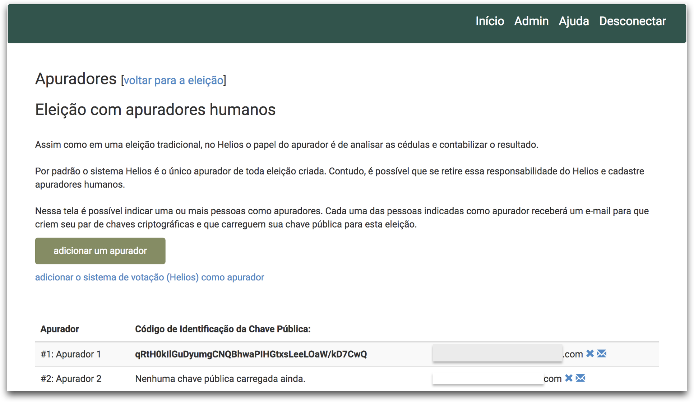

Como criar uma eleição
Informações gerais
-
Acesse o endereço http://helios.ifsc.edu.br, clique no menu Conectar e forneça seu nome de usuário e senha.
-
Clique no botão Criar eleição e preencha o formulário conforme orientação abaixo:
| Campo | Descrição |
|---|---|
| Nome abreviado | Nome que aparecerá na URL da eleição. Escolha um nome que faça sentido para eleição, contudo esse nome NÃO PODE conter espaços. |
| Nome | Nome que aparecerá em destaque para os eleitores. Escolha um nome que os eleitores possam facilmente identificar que eleição estão prestes a votar. Por exemplo: Eleição do Conselho XYZ 2018 |
| Descrição | Pode colocar informações detalhadas sobre a eleição, por exemplo, alguns pontos cruciais do edital, regimento da eleição, etc. |
| Usar pseudônimos de eleitores | Se marcada, a identidade dos eleitores será substituída por pseudônimos, p. ex.: "V12", no centro de rastreamento de cédulas. É altamente recomendado deixar ativado essa opção. |
| Usar funcionalidade avançada de auditoria | Ao ativar essa opção, os eleitores terão acesso a funcionalidades que permitiriam auditar a eleição, contudo deixaria a interface um pouco mais complicada. Recomenda-se deixar desativada essa opção. |
| Tornar ordem das questões aleatória | Habilite essa opção se você quiser que as questões apareçam em ordem aleatória para cada eleitor |
| Endereço de email para ajuda | Informe um endereço de email que os eleitores devem usar caso precisem de alguma ajuda. |
| Votação começa em | A partir dessa data e horário os eleitores poderão depositar cédulas na urna. Contudo, ainda é necessário que o gestor abra a eleição (veja o manual). |
| Votação termina em | A partir dessa data e horário não será mais possível depositar cédulas na urna. |
- Por fim, clique no botão Próximo e você verá a página incial da eleição, conforme figura abaixo:

Adicionando questões
Na página inicial da eleição clique no botão Questões. É possível adicionar quantas questões forem necessárias.
- Uma eleição é composta por uma ou mais questões.
- Uma questão é composta por uma ou mais respostas.
- É necessário que indique o número mínimo e o número máximo de respostas que o eleitor poderá escolher.
- Por padrão aparecem campos para 5 respostas. Você pode preencher menos que 5, contudo se precisar mais que 5, então clique no link adicionar mais 5 respostas.
- Cada resposta pode ter (opcional), além do texto principal, o endereço de uma página web externa.
- Nessa página poderia conter informações adcionais sobre a resposta. Por exemplo, essa página poderia conter uma mini biografia do candidato.

Ao terminar de criar as questões clique no link [Voltar para a eleição], que se encontra no topo da página, para voltar para a página inicial da eleição.
Carregando lista de eleitores
Na página inicial da eleição clique no botão Eleitores & Cédulas.
Só poderão votar em uma eleição os eleitores que forem carregados por meio de um arquivo CSV. Cada linha do arquivo do CSV representa um único eleitor e é composta pelos seguintes campos:
login, endereço-de-email,Nome Completo.
Exemplo:
11122233344,eleitor@email.com,Eleitor Nonono
12345678900,segundo@email.com,Segundo Nomomom

- Clique no botão carregar arquivo de eleitores
- Na próxima página clique no botão para procurar o arquivo CSV no disco do seu computador e por fim clique no botão Carregar.
- Será apresentada uma prévia do arquivo que você está prestes a carregar. Se estiver correto, então clique no botão Sim, carregar. Se deseja carregar outro arquivo, então clique no botão Não, deixe-me carregar um arquivo diferente.

Atenção: O tempo de processamento depende do tamanho do arquivo que fora carregado. Atualize a página (pressionando o botão "Atualizar" do teu navegador web) para verificar o progresso do processamento do arquivo.
Por fim, clique no link voltar para a eleição que está no topo da página. E se optar por deixar o sistema Helios como o único apurador, então vá para o manual Como iniciar uma eleição e ignore as seções abaixo.
Definindo o responsável pela apuração da eleição
Por padrão para toda nova eleição o sistema Helios fica como o único apurador. Essa opção deve ser usada sempre que possível, pois torna mais fácil a gestão da eleição.
Se você optou pelo Helios como apurador, parabéns! Sua eleição foi criada com sucesso e pode ir ler o manual Como iniciar uma eleição e enviar e-mail para os eleitores.
Porém, se está criando uma eleição onde é necessário separar a responsabilidade de apuração para outra(s) pessoa(s), então é recomendado que se adicione apuradores humanos. Com os apuradores humanos só será possível "abrir a urna para fazer a apuração" depois que esses apuradores entrarem no Helios e usarem sua chave criptográfica (criada em um momento anterior).
Adicionar apuradores humanos
- Na página inicial da eleição clique no botão Apuradores.
- Clique no ícone X azul que aparece no lado direito para remover o apurador #1 Sistema de Votação Eletrônica.
- Clique no botão Adicionar um apurador.

- Forneça o Nome Completo e o endereço de e-mail da pessoa que será o apurador e clique no botão Adicionar Apurador
- É possível adicionar quantos apuradores desejar, porém tenha em mente que essas pessoas serão as únicas que poderão abrir a urna para realizar a apuração. Basta que uma dessas pessoas não forneça sua chave para abrir a urna e isso será o suficiente para impedir que a urna seja aberta. Tenha cautela ao usar apuradores humanos
- Para que o apurador receba as instruções por e-mail, clique no ícone azul de um envelope que aparece para cada apurador.
- Você poderá ver o “código de identificação da chave pública” dos apuradores assim que eles carregarem suas chaves (de acordo com o manual Como gerar e carregar sua chave criptográfica). Se esta informação estiver em branco, então significa que o apurador ainda não carregou sua chave pública. 
- Por fim, clique no link Voltar para a eleição e vá para o manual Como iniciar uma eleição.